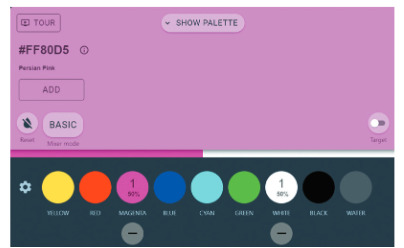
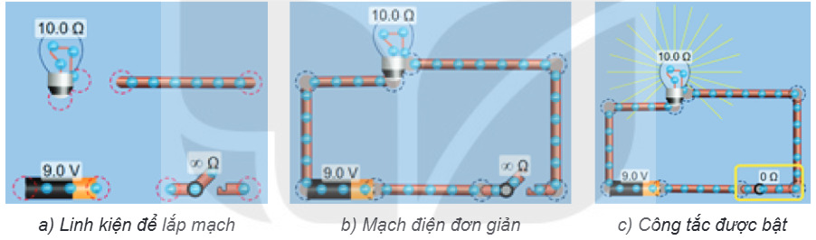
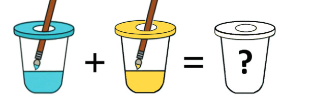

Dành cho giáo viên
Theo dõi lớp
| Học sinh / Nhóm | Đã nộp | Cập nhật |
|---|
Bước 1
1 Khởi động
Khởi động Tập pha màu
Minh: Pha màu để vẽ tưởng là đơn giản nhưng rất phức tạp. Tớ pha màu nhiều lần mà chưa tạo ra được màu cánh sen ưng ý.
An: Đúng là pha màu cần nhiều kinh nghiệm. Bạn sẽ phải tốn nhiều thời gian và màu vẽ đấy.
Minh: Tớ đã trộn nhiều màu đến mức, màu trở nên xỉn đục và không dùng được nữa.
An: Theo tớ, để tập pha màu mà tiết kiệm được thời gian và màu vẽ thì bạn nên sử dụng phần mềm mô phỏng trước khi thực hành pha màu.
An: Đúng là pha màu cần nhiều kinh nghiệm. Bạn sẽ phải tốn nhiều thời gian và màu vẽ đấy.
Minh: Tớ đã trộn nhiều màu đến mức, màu trở nên xỉn đục và không dùng được nữa.
An: Theo tớ, để tập pha màu mà tiết kiệm được thời gian và màu vẽ thì bạn nên sử dụng phần mềm mô phỏng trước khi thực hành pha màu.
Ghi bài Khởi động
Sau khi thầy cô chốt, em chép nội dung dưới đây vào vở.
Bước 2 · Hình thành kiến thức mới
2.1 Phần mềm mô phỏng
Hoạt động 1 Pha màu
Trong thực tế, khi pha màu, em chỉ có thể thay đổi tỉ lệ (giữa các màu) trong hỗn hợp màu đã pha bằng cách trộn thêm màu. Việc bổ sung nhiều màu có thể dẫn đến hỗn hợp màu xỉn đục và không dùng được nữa. Phần mềm mô phỏng pha màu (Hình 5.1) cho phép em chọn màu, tăng giảm tỉ lệ các màu và giúp em nhìn thấy màu kết quả được tạo ra trên màn hình. Em có thể tìm phần mềm pha màu trên Internet bằng từ khoá “mixing colors simulator”, ví dụ trang trycolors.com.

Đọc hiểu Một số phần mềm mô phỏng
Đọc mục 1 (SGK trang 20–21). Phần mềm mô phỏng là phương tiện giúp em quan sát và hình dung ra những hiện tượng khó hoặc không thể trải nghiệm trong thực tế, giúp em giải quyết nhiều vấn đề trong học tập, ví dụ thí nghiệm ảo lắp ráp mạch điện trên trang phet.colorado.edu (Hình 5.2). Phần mềm mô phỏng còn được sử dụng trong nhiều lĩnh vực khác như nghiên cứu chuyển động của phân tử, xây dựng giải pháp giao thông.

Câu hỏi SGK trang 21
Ghi bài 1. Phần mềm mô phỏng
Sau khi thầy cô chốt, em chép nội dung dưới đây vào vở.
Bước 2 · Hình thành kiến thức mới
2.2 Lợi ích của phần mềm mô phỏng
Hoạt động 2 Lợi ích của phần mềm mô phỏng
Đọc hiểu Lợi ích và lưu ý
Đọc mục 2 (SGK trang 21–22). Phần mềm mô phỏng giúp người sử dụng làm quen, tìm hiểu, nghiên cứu một đối tượng với chi phí thấp; nghiên cứu lí thuyết một cách trực quan, sinh động; tạo ra nhiều tình huống để luyện tập; hạn chế những tình huống có thể làm hỏng thiết bị hoặc gây nguy hiểm. Tuy nhiên, các phần mềm mô phỏng có chất lượng khác nhau.
Câu hỏi SGK trang 22
Ghi bài 2. Lợi ích của phần mềm mô phỏng
Sau khi thầy cô chốt, em chép nội dung dưới đây vào vở.
Bước 3
3 Luyện tập
Luyện tập Phần mềm mô phỏng hỗ trợ học tập
Em hãy tìm một phần mềm mô phỏng hỗ trợ học tập và trả lời các câu hỏi sau.
Ghi bài Luyện tập
Sau khi thầy cô chốt, em chép nội dung dưới đây vào vở.
Bước 4
4 Vận dụng
Vận dụng Pha màu hệ CMYK
Em hãy tìm kiếm trên Internet một phần mềm mô phỏng pha màu để tìm hiểu hệ màu CMYK và cho biết các màu đỏ (Red), lục (Green) và lam (Blue) lần lượt được tạo ra từ những màu nào trong ba màu cơ bản xanh lơ (Cyan), hồng sẫm (Magenta) và vàng (Yellow). Em cũng có thể thử ngay trên bảng pha màu mô phỏng dưới đây.

Bảng pha màu mô phỏng (hệ màu CMY)
Trắng
Ghi bài Vận dụng
Sau khi thầy cô chốt, em chép nội dung dưới đây vào vở.